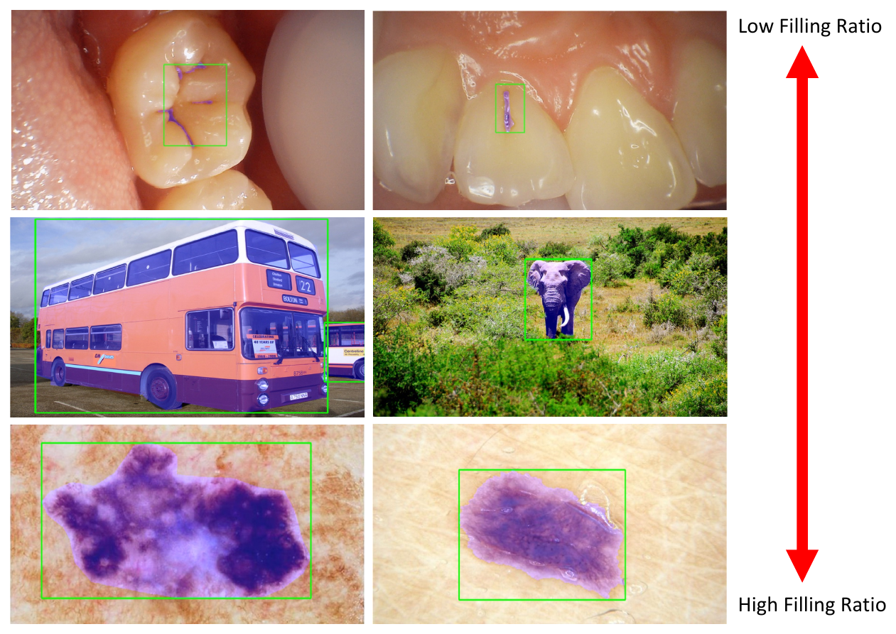
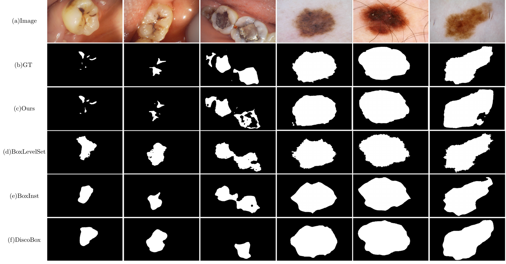

Where box labels fail
Pixel-level masks are expensive, so weakly supervised methods learn from boxes. A box is a coarse stand-in for a mask, and pseudo-masks built from it carry noise.
The damage is worst for lesions that are small, scattered and fill little of their box, as in endoscopic caries images.

Method
Two networks, one for detection and one for segmentation, look at the same image. Cross-task consistency regularisation (CTCR) aligns their low-level features, so detection's reliable localisation helps segmentation without dragging its semantics along. Iterative refinement (IRS) then chooses, for each image, the best pseudo-mask from a library of candidates, scoring them on box consistency, structural similarity [1] and the model's own predictions.

Results
On the caries dataset the method reaches 43.26% mIoU, 29.6 points above the best box-supervised baseline, BoxSnake [2], and 18.7 above SAM [3].
On ISIC2017 skin lesions [4], where objects are regular and fill most of their box, it is only competitive. CTCR alone adds 5 mIoU points. Everything happens at training time, so inference is unchanged.

References
- Z. Wang, A. C. Bovik, H. R. Sheikh, E. P. Simoncelli. Image quality assessment: From error visibility to structural similarity. IEEE TIP 13(4):600–612, 2004.
- R. Yang, L. Song, Y. Ge, X. Li. BoxSnake: Polygonal instance segmentation with box supervision. ICCV, 2023, pp. 766–776.
- A. Kirillov et al. Segment anything. ICCV, 2023, pp. 4015–4026.
- D. Gutman, N. C. F. Codella, E. Celebi et al. Skin lesion analysis toward melanoma detection. arXiv:1605.01397, 2016.